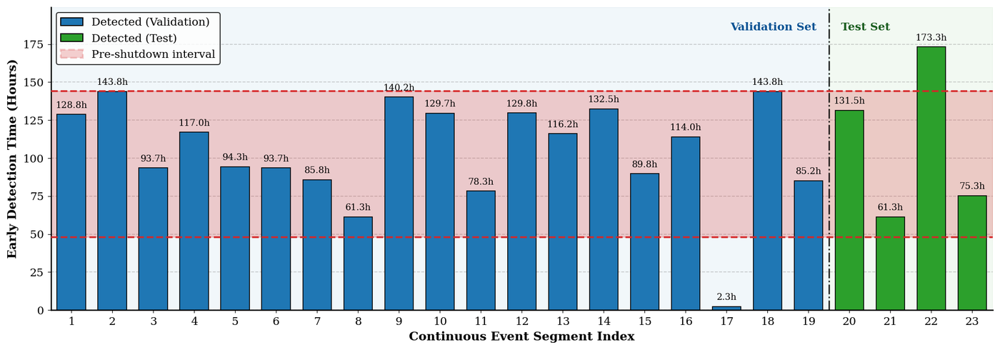
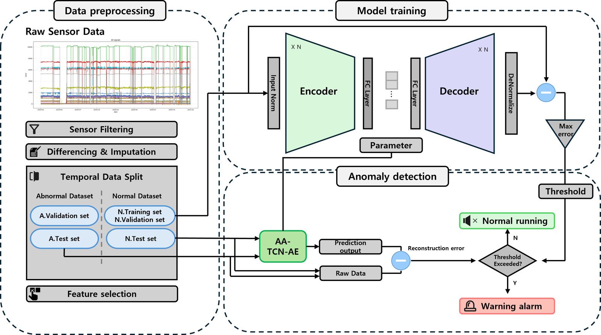
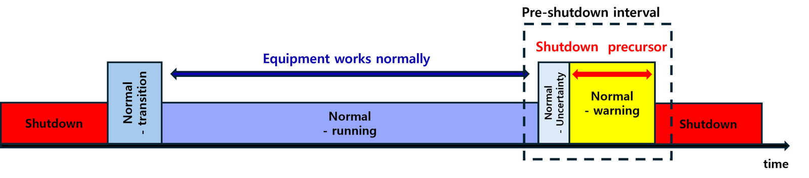

해상 가스터빈 설비 정지 조기경보Early warning of offshore gas turbine shutdowns
99개 센서(10분 간격), 정지 이력 41건. 시험 구간 정지 4건 모두 61~173시간 전에 경보99 sensors at 10-minute intervals, 41 shutdowns. All 4 test-period shutdowns flagged 61–173 h ahead
BSP가 요구한 것은 설비가 멈추기 최소 48시간 전에 울리는 경보였습니다. 연구실의 기존 접근은 센서값 자체를 예측하는 방식이었는데, 원천 데이터부터 다시 열어 정지 사건 단위의 이상탐지 문제로 새로 정의했습니다. 결과는 저널 투고 전 BSP 측에서 검토 중입니다.BSP needed an alarm at least 48 hours before a turbine shuts down. Earlier lab work forecast the raw signals; I went back to the source data and rebuilt the task as event-level anomaly detection. The results are under review by BSP before journal submission.
자세히 보기More
데이터 정비Data 운전 로그와 센서 신호를 대조해 정지 사건의 시작과 끝을 바로잡고, 정지와 상관없이 흔들리는 센서를 걸러냈습니다.Matched operating logs with sensor signals to correct where each shutdown begins and ends, and dropped sensors that fluctuate regardless of shutdowns.
모델Model 정상 운전 구간만 학습한 센서별 합성곱 오토인코더에, 센서마다 필요한 스케일과 활성함수만 남기는 적응형 모듈을 붙였습니다. 정지에 민감한 센서는 ECDF 엘보 임계값으로 골랐습니다.Sensor-wise convolutional autoencoders trained only on normal operation, with an adaptive module pruned per sensor. Event-sensitive sensors are kept by an ECDF elbow threshold.
평가Evaluation 시점별 정확도 대신, 정지 사건마다 첫 경보가 몇 시간 전에 울렸는지로 평가했습니다.Scored each shutdown by how many hours ahead the first alarm fired, not by point-wise accuracy.

